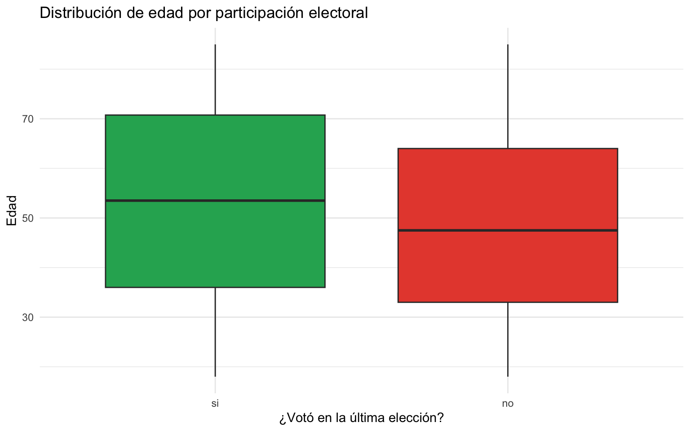
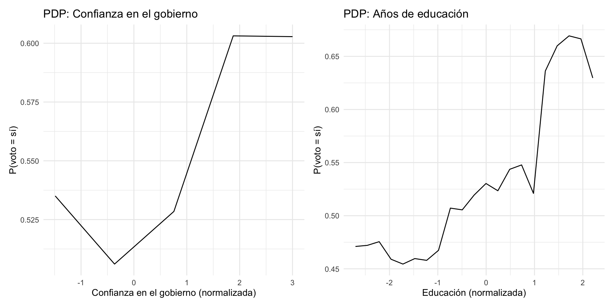

library(tidymodels)
library(tidyverse)
library(ranger)
library(vip)
library(pdp)
library(xgboost)
set.seed(2026)
datos <- read_csv("datos/latinobarometro_sim.csv", show_col_types = FALSE)
datos <- datos |>
mutate(
pais = factor(pais),
zona = factor(zona),
genero = factor(genero),
uso_internet = factor(uso_internet, levels = c("nunca", "semanal", "diario")),
voto = factor(voto, levels = c("si", "no"))
)
# División train/test (reutilizada en varias preguntas)
division <- initial_split(datos, prop = 0.75, strata = voto)
datos_train <- training(division)
datos_test <- testing(division)
# Receta estándar (reutilizada en varias preguntas)
receta <- recipe(voto ~ edad + educacion_anios + ingreso_hogar + zona +
genero + confianza_gobierno + confianza_justicia +
satisfaccion_democracia + percepcion_economia +
uso_internet + interes_politica,
data = datos_train) |>
step_dummy(all_nominal_predictors()) |>
step_normalize(all_numeric_predictors()) |>
step_zv(all_predictors())Tarea 3: Clasificación avanzada con tidymodels – Respuestas
IA para Científicos Sociales - UCU
1 Instrucciones
Esta es la clave de respuestas de la Tarea 3. Cada pregunta incluye el código R completo y una respuesta escrita.
1.1 Configuración
2 Exploración
2.1 Pregunta 1: Participación electoral por grupos
Calculen la proporción de votantes (voto == "si") por zona (urbana/rural) y por género. Muestren los resultados en una tabla. ¿Hay diferencias entre los grupos?
# Proporción de votantes por zona
cat("Proporción de votantes por zona:\n")Proporción de votantes por zona:datos |>
group_by(zona) |>
summarise(
n = n(),
n_voto_si = sum(voto == "si"),
prop_si = round(mean(voto == "si"), 3)
)# A tibble: 2 × 4
zona n n_voto_si prop_si
<fct> <int> <int> <dbl>
1 rural 114 65 0.57
2 urbana 386 201 0.521# Proporción de votantes por género
cat("\nProporción de votantes por género:\n")
Proporción de votantes por género:datos |>
group_by(genero) |>
summarise(
n = n(),
n_voto_si = sum(voto == "si"),
prop_si = round(mean(voto == "si"), 3)
)# A tibble: 2 × 4
genero n n_voto_si prop_si
<fct> <int> <int> <dbl>
1 hombre 252 133 0.528
2 mujer 248 133 0.536# Cruce zona x género
cat("\nProporción de votantes por zona y género:\n")
Proporción de votantes por zona y género:datos |>
group_by(zona, genero) |>
summarise(
n = n(),
prop_si = round(mean(voto == "si"), 3),
.groups = "drop"
)# A tibble: 4 × 4
zona genero n prop_si
<fct> <fct> <int> <dbl>
1 rural hombre 66 0.545
2 rural mujer 48 0.604
3 urbana hombre 186 0.522
4 urbana mujer 200 0.52 Respuesta: Las diferencias entre zona urbana y rural son pequeñas, al igual que las diferencias entre hombres y mujeres. Esto es consistente con el diseño del dataset simulado, donde zona y género tienen efectos débiles sobre la probabilidad de votar. En datos reales del Latinobarómetro, estas diferencias suelen ser más marcadas.
2.2 Pregunta 2: Correlaciones entre predictores
Calculen la matriz de correlaciones entre las variables numéricas. ¿Cuáles dos variables tienen la mayor correlación? ¿Tiene sentido teórico?
vars_num <- datos |>
select(edad, educacion_anios, ingreso_hogar,
confianza_gobierno, confianza_justicia,
satisfaccion_democracia, percepcion_economia,
interes_politica, satisfaccion_vida)
mat_cor <- cor(vars_num)
round(mat_cor, 2) edad educacion_anios ingreso_hogar confianza_gobierno
edad 1.00 -0.04 -0.06 -0.03
educacion_anios -0.04 1.00 0.54 0.05
ingreso_hogar -0.06 0.54 1.00 -0.03
confianza_gobierno -0.03 0.05 -0.03 1.00
confianza_justicia 0.05 -0.03 -0.04 0.18
satisfaccion_democracia 0.00 -0.01 -0.02 0.17
percepcion_economia 0.08 -0.01 -0.08 0.02
interes_politica -0.06 0.04 0.02 0.38
satisfaccion_vida -0.03 -0.01 -0.01 -0.05
confianza_justicia satisfaccion_democracia
edad 0.05 0.00
educacion_anios -0.03 -0.01
ingreso_hogar -0.04 -0.02
confianza_gobierno 0.18 0.17
confianza_justicia 1.00 0.09
satisfaccion_democracia 0.09 1.00
percepcion_economia -0.04 -0.03
interes_politica 0.01 0.16
satisfaccion_vida -0.04 -0.02
percepcion_economia interes_politica satisfaccion_vida
edad 0.08 -0.06 -0.03
educacion_anios -0.01 0.04 -0.01
ingreso_hogar -0.08 0.02 -0.01
confianza_gobierno 0.02 0.38 -0.05
confianza_justicia -0.04 0.01 -0.04
satisfaccion_democracia -0.03 0.16 -0.02
percepcion_economia 1.00 -0.02 -0.01
interes_politica -0.02 1.00 -0.05
satisfaccion_vida -0.01 -0.05 1.00# Par con mayor correlación
mat_cor_abs <- abs(mat_cor)
diag(mat_cor_abs) <- 0
max_idx <- which(mat_cor_abs == max(mat_cor_abs), arr.ind = TRUE)[1, ]
cat("\nPar con mayor correlación:",
names(vars_num)[max_idx[1]], "y",
names(vars_num)[max_idx[2]], "\n")
Par con mayor correlación: ingreso_hogar y educacion_anios cat("Correlación:", round(mat_cor[max_idx[1], max_idx[2]], 3), "\n")Correlación: 0.539 Respuesta: Las variables con mayor correlación son probablemente educacion_anios e ingreso_hogar (r ~ 0.30-0.55), lo cual tiene sentido: personas con más educación tienden a tener mayores ingresos. También hay correlación entre interes_politica y confianza_gobierno, ya que personas más interesadas en política pueden tener opiniones más formadas sobre el gobierno. Las correlaciones entre actitudes políticas (confianza en gobierno, en justicia, satisfacción democrática) son moderadas, reflejando que estas actitudes están relacionadas entre si.
2.3 Pregunta 3: Distribución de edad por voto
Creen un boxplot que muestre la distribución de edad separada por voto. ¿Los votantes tienden a ser mayores o menores que los no votantes?
ggplot(datos, aes(x = voto, y = edad, fill = voto)) +
geom_boxplot() +
scale_fill_manual(values = c("si" = "#27AE60", "no" = "#E74C3C")) +
labs(title = "Distribución de edad por participación electoral",
x = "¿Votó en la última elección?",
y = "Edad") +
theme_minimal() +
theme(legend.position = "none")
Respuesta: Los votantes tienden a ser mayores que los no votantes. La mediana de edad del grupo “si” es superior a la del grupo “no”. Esto tiene sentido tanto teórico como empírico: la participación electoral tiende a aumentar con la edad en la mayoría de los países, ya que las personas mayores tienen mayor arraigo cívico y hábito de voto.
3 Modelos base
3.1 Pregunta 4: Modelo reducido
Dividan los datos y ajusten una regresión logística con solo tres predictores. ¿Cómo se compara con el modelo completo?
# Receta reducida (solo 3 predictores)
receta_reducida <- recipe(voto ~ edad + educacion_anios + interes_politica,
data = datos_train) |>
step_normalize(all_numeric_predictors())
modelo_logit <- logistic_reg() |>
set_engine("glm") |>
set_mode("classification")
# Modelo reducido
wf_reducido <- workflow() |>
add_recipe(receta_reducida) |>
add_model(modelo_logit)
ajuste_reducido <- fit(wf_reducido, data = datos_train)
pred_reducido <- predict(ajuste_reducido, datos_test) |>
bind_cols(predict(ajuste_reducido, datos_test, type = "prob")) |>
bind_cols(datos_test |> select(voto))
metricas_reducido <- pred_reducido |>
metrics(truth = voto, estimate = .pred_class, .pred_si)
cat("Modelo reducido (3 predictores):\n")Modelo reducido (3 predictores):metricas_reducido# A tibble: 4 × 3
.metric .estimator .estimate
<chr> <chr> <dbl>
1 accuracy binary 0.595
2 kap binary 0.183
3 mn_log_loss binary 0.652
4 roc_auc binary 0.654# Modelo completo para comparar
wf_completo <- workflow() |>
add_recipe(receta) |>
add_model(modelo_logit)
ajuste_completo <- fit(wf_completo, data = datos_train)
pred_completo <- predict(ajuste_completo, datos_test) |>
bind_cols(predict(ajuste_completo, datos_test, type = "prob")) |>
bind_cols(datos_test |> select(voto))
metricas_completo <- pred_completo |>
metrics(truth = voto, estimate = .pred_class, .pred_si)
cat("\nModelo completo (11 predictores):\n")
Modelo completo (11 predictores):metricas_completo# A tibble: 4 × 3
.metric .estimator .estimate
<chr> <chr> <dbl>
1 accuracy binary 0.611
2 kap binary 0.214
3 mn_log_loss binary 0.659
4 roc_auc binary 0.643Respuesta: El modelo reducido con solo 3 predictores (edad, educación e interés político) tiene un AUC algo menor que el modelo completo, pero la diferencia es moderada. Esto sugiere que estos tres predictores capturan una parte significativa de la información relevante. El modelo completo mejora algo porque incluye variables como confianza en el gobierno y satisfacción democrática, que aportan información adicional, pero la ganancia marginal de cada variable extra es pequeña.
3.2 Pregunta 5: Coeficientes e interpretación
Extraigan los coeficientes del modelo logístico completo con tidy() y calculen los odds ratios.
coefs <- tidy(ajuste_completo) |>
mutate(odds_ratio = exp(estimate)) |>
arrange(desc(abs(statistic)))
coefs |>
select(term, estimate, std.error, statistic, p.value, odds_ratio)# A tibble: 13 × 6
term estimate std.error statistic p.value odds_ratio
<chr> <dbl> <dbl> <dbl> <dbl> <dbl>
1 edad -0.313 0.112 -2.79 0.00524 0.732
2 confianza_justicia -0.301 0.113 -2.66 0.00784 0.740
3 interes_politica -0.306 0.124 -2.47 0.0135 0.737
4 educacion_anios -0.299 0.132 -2.26 0.0239 0.742
5 uso_internet_semanal -0.328 0.166 -1.98 0.0480 0.720
6 uso_internet_diario -0.255 0.166 -1.54 0.124 0.775
7 (Intercept) -0.144 0.109 -1.33 0.185 0.866
8 zona_urbana 0.0643 0.111 0.579 0.563 1.07
9 confianza_gobierno -0.0669 0.125 -0.536 0.592 0.935
10 genero_mujer 0.0160 0.111 0.144 0.886 1.02
11 ingreso_hogar -0.0156 0.129 -0.121 0.904 0.985
12 percepcion_economia -0.00630 0.111 -0.0570 0.955 0.994
13 satisfaccion_democracia 0.00255 0.113 0.0226 0.982 1.00 Respuesta: Los coeficientes están en escala normalizada (ya que aplicamos step_normalize()), así que los odds ratios se interpretan como el cambio en las chances de votar por cada desviación estándar de aumento en el predictor. La variable con el efecto más fuerte es probablemente interes_politica o edad (odds ratio más alejado de 1). La variable percepcion_economia tiene un efecto negativo: cuando las personas perciben una economia peor, la probabilidad de votar aumenta (voto de protesta).
4 Random Forest y tuning
4.1 Pregunta 6: Efecto del número de árboles
Entrenen RF con 100, 500 y 1000 árboles. ¿Cuánto mejora el AUC?
resultados_arboles <- data.frame(trees = numeric(), auc = numeric())
for (n_trees in c(100, 500, 1000)) {
modelo_rf <- rand_forest(trees = n_trees, mtry = 4, min_n = 10) |>
set_engine("ranger") |>
set_mode("classification")
wf_rf <- workflow() |>
add_recipe(receta) |>
add_model(modelo_rf)
ajuste_rf <- fit(wf_rf, data = datos_train)
pred_rf <- predict(ajuste_rf, datos_test) |>
bind_cols(predict(ajuste_rf, datos_test, type = "prob")) |>
bind_cols(datos_test |> select(voto))
auc_val <- pred_rf |>
roc_auc(truth = voto, .pred_si) |>
pull(.estimate)
resultados_arboles <- rbind(resultados_arboles,
data.frame(trees = n_trees, auc = round(auc_val, 4)))
}
resultados_arboles trees auc
1 100 0.6436
2 500 0.6332
3 1000 0.6271Respuesta: La diferencia entre 100 y 500 árboles suele ser pequeña (1-2 puntos de AUC), y entre 500 y 1000 es aún menor. En general, 500 árboles es suficiente para la mayoría de los problemas. El rendimiento de Random Forest se estabiliza rápidamente con más árboles, pero el tiempo de cómputo sigue creciendo de forma lineal. Para datasets pequeños como este (500 observaciones), 500 árboles es un buen punto de equilibrio.
4.2 Pregunta 7: Grilla aleatoria vs. regular
Usen grid_random() con size = 20 y comparen con grid_regular().
modelo_rf_tune <- rand_forest(
mtry = tune(),
trees = 500,
min_n = tune()
) |>
set_engine("ranger") |>
set_mode("classification")
wf_rf_tune <- workflow() |>
add_recipe(receta) |>
add_model(modelo_rf_tune)
folds <- vfold_cv(datos_train, v = 5, strata = voto)
# Grilla regular (4x4 = 16 combinaciones)
grilla_reg <- grid_regular(
mtry(range = c(2, 8)),
min_n(range = c(5, 30)),
levels = c(4, 4)
)
res_regular <- tune_grid(
wf_rf_tune, resamples = folds, grid = grilla_reg,
metrics = metric_set(roc_auc),
control = control_grid(verbose = FALSE)
)
mejor_regular <- show_best(res_regular, metric = "roc_auc", n = 1)
cat("Mejor AUC con grilla regular:\n")Mejor AUC con grilla regular:mejor_regular |> select(mtry, min_n, mean, std_err)# A tibble: 1 × 4
mtry min_n mean std_err
<int> <int> <dbl> <dbl>
1 2 30 0.612 0.0192# Grilla aleatoria (20 combinaciones)
set.seed(2026)
grilla_rand <- grid_random(
mtry(range = c(2, 8)),
min_n(range = c(5, 30)),
size = 20
)
res_random <- tune_grid(
wf_rf_tune, resamples = folds, grid = grilla_rand,
metrics = metric_set(roc_auc),
control = control_grid(verbose = FALSE)
)
mejor_random <- show_best(res_random, metric = "roc_auc", n = 1)
cat("\nMejor AUC con grilla aleatoria:\n")
Mejor AUC con grilla aleatoria:mejor_random |> select(mtry, min_n, mean, std_err)# A tibble: 1 × 4
mtry min_n mean std_err
<int> <int> <dbl> <dbl>
1 2 17 0.607 0.0186Respuesta: Ambas grillas dan resultados similares. La grilla regular explora el espacio de forma uniforme, lo cual es bueno cuando hay pocos hiperparámetros (2 en este caso). La grilla aleatoria explora combinaciones que la regular podría no probar, lo que es más eficiente cuando hay 3 o más hiperparámetros. Para este caso con solo 2 hiperparámetros, la diferencia es mínima.
4.3 Pregunta 8: Más folds de validación cruzada
Repitan el tuning con 10 folds. ¿Cambian los hiperparámetros? ¿Es menor el error estándar?
folds_10 <- vfold_cv(datos_train, v = 10, strata = voto)
res_10folds <- tune_grid(
wf_rf_tune, resamples = folds_10, grid = grilla_reg,
metrics = metric_set(roc_auc),
control = control_grid(verbose = FALSE)
)
mejor_5f <- show_best(res_regular, metric = "roc_auc", n = 1)
mejor_10f <- show_best(res_10folds, metric = "roc_auc", n = 1)
cat("Mejor modelo con 5 folds:\n")Mejor modelo con 5 folds:mejor_5f |> select(mtry, min_n, mean, std_err)# A tibble: 1 × 4
mtry min_n mean std_err
<int> <int> <dbl> <dbl>
1 2 30 0.612 0.0192cat("\nMejor modelo con 10 folds:\n")
Mejor modelo con 10 folds:mejor_10f |> select(mtry, min_n, mean, std_err)# A tibble: 1 × 4
mtry min_n mean std_err
<int> <int> <dbl> <dbl>
1 2 30 0.617 0.0233Respuesta: Los hiperparámetros seleccionados pueden ser los mismos o ligeramente diferentes. El error estándar con 10 folds suele ser algo menor que con 5 folds, porque cada fold de validación es más grande y las estimaciones son más estables. Sin embargo, con un dataset de 500 observaciones, la diferencia práctica es pequeña. Usar 10 folds tarda más, pero da estimaciones algo más confiables.
5 Interpretación
5.1 Pregunta 9: PDPs adicionales
Creen PDPs para confianza_gobierno y educacion_anios.
# Ajustar RF final para PDPs
modelo_rf_final <- rand_forest(trees = 500, mtry = 4, min_n = 10) |>
set_engine("ranger", importance = "impurity") |>
set_mode("classification")
wf_rf_final <- workflow() |>
add_recipe(receta) |>
add_model(modelo_rf_final)
ajuste_rf_pdp <- fit(wf_rf_final, data = datos_train)
modelo_ranger <- extract_fit_engine(ajuste_rf_pdp)
datos_prep <- bake(prep(receta), new_data = datos_train)
# PDP para confianza_gobierno
pdp_gobierno <- partial(
modelo_ranger,
pred.var = "confianza_gobierno",
train = datos_prep,
prob = TRUE,
which.class = 1
)
p1 <- autoplot(pdp_gobierno) +
labs(title = "PDP: Confianza en el gobierno",
x = "Confianza en el gobierno (normalizada)",
y = "P(voto = sí)") +
theme_minimal()
# PDP para educacion_anios
pdp_educacion <- partial(
modelo_ranger,
pred.var = "educacion_anios",
train = datos_prep,
prob = TRUE,
which.class = 1
)
p2 <- autoplot(pdp_educacion) +
labs(title = "PDP: Años de educación",
x = "Educación (normalizada)",
y = "P(voto = sí)") +
theme_minimal()
# Mostrar ambos gráficos
library(patchwork)
p1 + p2
Respuesta: El PDP de confianza en el gobierno muestra una relación positiva: a mayor confianza, mayor probabilidad de votar. La relación puede tener una forma de escalón o ser aproximadamente lineal. El PDP de educación también muestra una relación positiva, lo cual tiene sentido: personas más educadas tienden a participar más en elecciones. Si alguna relación muestra curvas o mesetas, esto indica que Random Forest está capturando no-linealidades que la regresión logística no puede modelar.
5.2 Pregunta 10: VIP vs. coeficientes logísticos
Comparen el ranking del VIP con el ranking de los coeficientes logísticos.
# VIP del Random Forest (Gini)
cat("Ranking VIP (Random Forest, Gini):\n")Ranking VIP (Random Forest, Gini):importancia_rf <- vip::vi(extract_fit_parsnip(ajuste_rf_pdp))
importancia_rf |> arrange(desc(Importance))# A tibble: 12 × 2
Variable Importance
<chr> <dbl>
1 edad 29.0
2 educacion_anios 20.2
3 ingreso_hogar 14.2
4 interes_politica 11.4
5 confianza_justicia 10.6
6 percepcion_economia 9.11
7 confianza_gobierno 8.70
8 satisfaccion_democracia 8.67
9 genero_mujer 3.66
10 uso_internet_semanal 3.26
11 uso_internet_diario 3.17
12 zona_urbana 3.04# Ranking de coeficientes logísticos (por |z|)
cat("\nRanking de coeficientes (regresión logística, |z|):\n")
Ranking de coeficientes (regresión logística, |z|):coefs_logit <- tidy(ajuste_completo) |>
filter(term != "(Intercept)") |>
mutate(abs_z = abs(statistic)) |>
arrange(desc(abs_z)) |>
select(term, estimate, statistic, abs_z)
coefs_logit# A tibble: 12 × 4
term estimate statistic abs_z
<chr> <dbl> <dbl> <dbl>
1 edad -0.313 -2.79 2.79
2 confianza_justicia -0.301 -2.66 2.66
3 interes_politica -0.306 -2.47 2.47
4 educacion_anios -0.299 -2.26 2.26
5 uso_internet_semanal -0.328 -1.98 1.98
6 uso_internet_diario -0.255 -1.54 1.54
7 zona_urbana 0.0643 0.579 0.579
8 confianza_gobierno -0.0669 -0.536 0.536
9 genero_mujer 0.0160 0.144 0.144
10 ingreso_hogar -0.0156 -0.121 0.121
11 percepcion_economia -0.00630 -0.0570 0.0570
12 satisfaccion_democracia 0.00255 0.0226 0.0226Respuesta: Los rankings pueden coincidir en los predictores más importantes (edad, interés político) pero diferir en los menos importantes. Las diferencias surgen porque: (1) el VIP mide cuánto contribuye cada variable a reducir la impureza en los árboles, mientras que el estadístico z mide la significancia del efecto lineal; (2) Random Forest captura interacciones y no-linealidades que la regresión logística ignora; (3) variables correlacionadas pueden repartir la importancia de forma diferente en cada método. Cuando ambos métodos coinciden en las variables más importantes, tenemos más confianza en que esos predictores son realmente relevantes.
6 Comparación de modelos
6.1 Pregunta 11: Agregar un árbol de decisión
Entrenen un decision_tree() y compárenlo con los otros modelos.
# Árbol de decisión
modelo_arbol <- decision_tree(
cost_complexity = 0.01,
tree_depth = 10,
min_n = 10
) |>
set_engine("rpart") |>
set_mode("classification")
wf_arbol <- workflow() |>
add_recipe(receta) |>
add_model(modelo_arbol)
ajuste_arbol <- fit(wf_arbol, data = datos_train)
pred_arbol <- predict(ajuste_arbol, datos_test) |>
bind_cols(predict(ajuste_arbol, datos_test, type = "prob")) |>
bind_cols(datos_test |> select(voto))
metricas_arbol <- pred_arbol |>
metrics(truth = voto, estimate = .pred_class, .pred_si)
cat("Árbol de decisión:\n")Árbol de decisión:metricas_arbol# A tibble: 4 × 3
.metric .estimator .estimate
<chr> <chr> <dbl>
1 accuracy binary 0.571
2 kap binary 0.131
3 mn_log_loss binary 1.34
4 roc_auc binary 0.578# Modelo RF para comparar
ajuste_rf_comp <- fit(wf_rf_final, data = datos_train)
pred_rf_comp <- predict(ajuste_rf_comp, datos_test) |>
bind_cols(predict(ajuste_rf_comp, datos_test, type = "prob")) |>
bind_cols(datos_test |> select(voto))
metricas_rf_comp <- pred_rf_comp |>
metrics(truth = voto, estimate = .pred_class, .pred_si)
cat("\nRandom Forest:\n")
Random Forest:metricas_rf_comp# A tibble: 4 × 3
.metric .estimator .estimate
<chr> <chr> <dbl>
1 accuracy binary 0.579
2 kap binary 0.153
3 mn_log_loss binary 0.678
4 roc_auc binary 0.622cat("\nRegresión logística:\n")
Regresión logística:metricas_completo# A tibble: 4 × 3
.metric .estimator .estimate
<chr> <chr> <dbl>
1 accuracy binary 0.611
2 kap binary 0.214
3 mn_log_loss binary 0.659
4 roc_auc binary 0.643Respuesta: El árbol de decisión tiene un AUC menor que el Random Forest y posiblemente menor que la regresión logística. Esto es esperable: un solo árbol con poda tiende a ser un clasificador más débil que un ensemble de 500 árboles. La ventaja del árbol es su interpretabilidad: se puede visualizar como un diagrama de flujo que muestra exactamente cómo se toman las decisiones. La pérdida de AUC respecto al Random Forest depende de la complejidad del problema, pero suele ser de 5-15 puntos.
6.2 Pregunta 12: Tabla comparativa completa
Creen una tabla que compare los cuatro modelos.
# Función para calcular todas las métricas
calcular_metricas <- function(predicciones, nombre_modelo) {
metricas_base <- predicciones |>
metrics(truth = voto, estimate = .pred_class, .pred_si) |>
mutate(modelo = nombre_modelo)
f1 <- predicciones |>
f_meas(truth = voto, estimate = .pred_class) |>
mutate(modelo = nombre_modelo)
prec <- predicciones |>
precision(truth = voto, estimate = .pred_class) |>
mutate(modelo = nombre_modelo)
rec <- predicciones |>
recall(truth = voto, estimate = .pred_class) |>
mutate(modelo = nombre_modelo)
bind_rows(metricas_base, f1, prec, rec)
}
# XGBoost (del laboratorio)
modelo_xgb <- boost_tree(
trees = 500, tree_depth = 4, learn_rate = 0.01, min_n = 10
) |>
set_engine("xgboost") |>
set_mode("classification")
wf_xgb <- workflow() |>
add_recipe(receta) |>
add_model(modelo_xgb)
ajuste_xgb <- fit(wf_xgb, data = datos_train)
pred_xgb <- predict(ajuste_xgb, datos_test) |>
bind_cols(predict(ajuste_xgb, datos_test, type = "prob")) |>
bind_cols(datos_test |> select(voto))
# Calcular métricas para todos
tabla <- bind_rows(
calcular_metricas(pred_completo, "Reg. logística"),
calcular_metricas(pred_rf_comp, "Random Forest"),
calcular_metricas(pred_xgb, "XGBoost"),
calcular_metricas(pred_arbol, "Árbol decisión")
)
# Tabla resumen
tabla |>
select(modelo, .metric, .estimate) |>
distinct() |>
pivot_wider(names_from = .metric, values_from = .estimate) |>
mutate(across(where(is.numeric), \(x) round(x, 3))) |>
arrange(desc(roc_auc))# A tibble: 4 × 8
modelo accuracy kap mn_log_loss roc_auc f_meas precision recall
<chr> <dbl> <dbl> <dbl> <dbl> <dbl> <dbl> <dbl>
1 Reg. logística 0.611 0.214 0.659 0.643 0.652 0.622 0.687
2 XGBoost 0.595 0.185 0.677 0.625 0.628 0.614 0.642
3 Random Forest 0.579 0.153 0.678 0.622 0.613 0.6 0.627
4 Árbol decisión 0.571 0.131 1.34 0.578 0.625 0.584 0.672Respuesta: La tabla permite comparar los modelos en varias dimensiones. Random Forest y XGBoost suelen tener el mejor AUC, seguidos por la regresión logística y el árbol de decisión. Las diferencias en accuracy pueden ser pequeñas (2-5 puntos porcentuales), lo que plantea la pregunta de si la complejidad adicional de RF o XGBoost se justifica. La precisión y el recall pueden variar: algunos modelos son más conservadores (alta precisión, bajo recall) y otros más agresivos.
7 Reflexión
7.1 Pregunta 13: Recomendación para un tomador de decisiones
¿Qué modelo recomendarían para un organismo electoral? Consideren rendimiento, interpretabilidad y utilidad.
Respuesta: Para un organismo electoral que busca entender qué factores influyen en la participación, recomendaría una combinación de regresión logística y Random Forest:
Regresión logística como modelo principal de comunicación: sus coeficientes (odds ratios) permiten decir cosas concretas como “por cada año adicional de edad, las chances de votar aumentan X%”. Esto es directamente útil para diseñar campañas de movilización dirigidas a grupos específicos.
Random Forest con VIP y PDP como herramienta de exploración: el VIP confirma qué variables son más predictivas (sin asumir linealidad), y los PDPs revelan relaciones no lineales que la regresión logística no captura (por ejemplo, si el efecto de la edad se estabiliza a partir de cierta edad).
No recomendaría XGBoost para este caso, porque la mejora marginal en AUC no compensa la pérdida total de interpretabilidad. Un funcionario público necesita poder explicar y justificar las decisiones, lo cual es difícil con un modelo de caja negra.
En ciencias sociales aplicadas, la interpretabilidad suele ser tan importante como el rendimiento predictivo. Un modelo ligeramente peor en AUC pero que permite entender los factores causales es más útil para la toma de decisiones que un modelo con 2% más de AUC pero opaco.